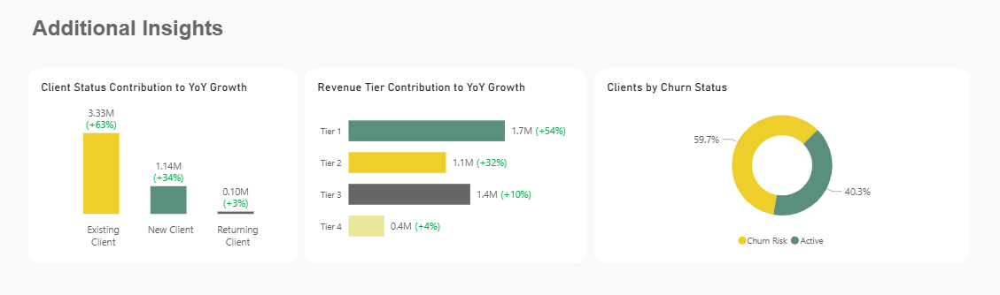
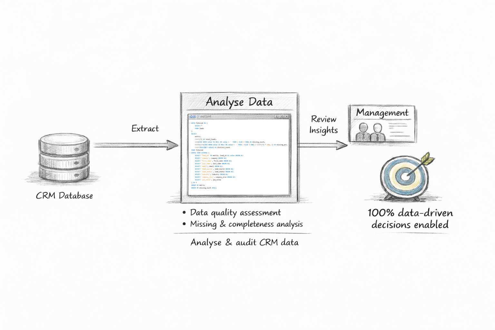

This dashboard provides a comprehensive view of revenue performance and client behaviour for 2025. It tracks key KPIs, monitors client acquisition, retention, and churn, and analyses revenue trends by industry, lead source, client status, and tier, enabling stakeholders to identify growth opportunities and manage client relationships effectively.

Develop an executive dashboard to monitor revenue and client KPIs, track trends, and analyse client acquisition, retention, churn, and revenue tiers. Provides actionable insights into client status, lead sources, and industry performance to support commercial decision-making.
Power BI for interactive visualisation; SQL, DAX and Power Query for data modelling and transformation. Analytical techniques include trend analysis, revenue contribution assessment by client status and tier, and performance comparisons by industry and lead source.
Commercial leadership, Sales and Account Management teams, and Strategy teams. The dashboard provides high-level KPIs for executive oversight and detailed insights for operational and strategic decisions.
The dashboard presents interactive KPI cards summarizing Revenue, New Clients, Average Deal Size, Win Rate, and Churn Rate, providing an immediate snapshot of commercial performance. Line charts compare 2024 vs. 2025 revenue trends to highlight growth momentum and seasonal patterns.
Bar charts and structured tables analyze revenue contribution and year-over-year growth by industry and lead source, identifying high-performing acquisition channels. Stacked and segmented bar visuals illustrate client distribution, revenue contribution, and impact on YoY growth by client status and tier, enabling deeper insight into portfolio quality. Donut visuals surface clients at risk of churn, supporting proactive retention strategies and revenue protection.

Note: All metrics presented are based on professional experience and have been anonymised, aggregated, or proportionally adjusted to ensure compliance with confidentiality and data protection standards.

Executive dashboard visualising key metrics, tracking revenue trends, and delivering business insights.
BigQuery • ARIMA • PowerBI

Audit, transform, and enrich CRM data to ensure accuracy, standardise key fields consistently.
100% data-driven decisions enabled

Finance dashboard visualising key KPIs, profitability trends, and cost insights to drive decision-making.
QlikSense • Excel • PowerBI